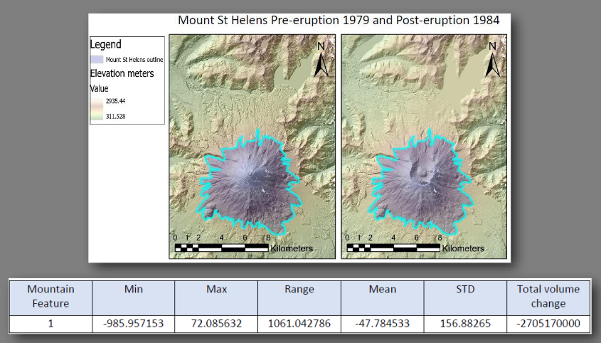

Click to enlarge
1 / 3
Volcanic Change Detection
Mount St Helens terrain and lava dome change
Used remote sensing, DEMs, and classification workflows to analyse terrain loss from the eruption and glacier-lava dome dynamics over time.